THE EARLY WARNING SYSTEM · PROJECT MANAGEMENT
Early warning for project delivery
See where a project is heading against the client's commitment, which tasks are stuck, and what to fix first.
WHAT IT IS
Projected Prod completion against the date promised to the client, with the buffer in working days.
Late tasks and struggles: things outside the team's control that hold a task up, shown as 🔥.
A ranked priority list that tells the team which task to look at first, and why.
Golden Hour · early warning for project delivery
THE PROBLEM
Managers usually learn about it at the deadline, when there is no time left to react. Golden Hour makes the slip visible weeks earlier.
Golden Hour · early warning for project delivery
LINKS
golden-hour-pm.vercel.app
Open it in any browser. No login: switch the "Signed in as" menu to act as any team member.
github.com/Julie-hub-source/Golden_Hour_PM
Next.js, TypeScript, Supabase. The README has the setup steps; CLAUDE.md holds the business rules.
HOW TO USE IT
Use the Signed in as menu at the top right. It lists every team member with their role, for example Alex.PM or Ben.PO.
The buttons change with the role. PM and PO can edit the plan. Other members can change only the tasks they own.
Switch to another member and repeat the step. There is no real security yet, so use this for testing and review.
END-TO-END FLOW
1
Name, start date, Prod commitment. A 35-task flow is created.
2
Each task gets the member with the matching role. Owners can change.
3
Owners move tasks through statuses and add struggles when they are stuck.
4
Key figures, late tasks, the Gantt chart and the dependency tree show the impact.
5
What-if adds delay to one task. Priority ranks what to fix first.
6
Solve a struggle, update dates and commitments. The numbers update at once.
Each step is shown on the following slides.
1 · PROJECTS
Each card shows the complete date, the client's Prod commitment, the member count and progress.
PM can change the priority directly on the card. The start date is set in Settings.
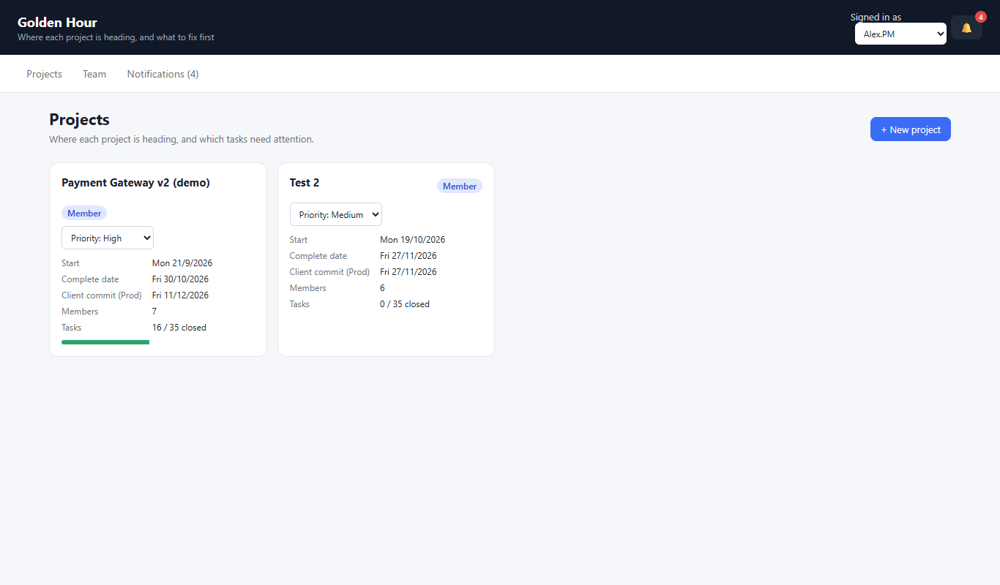
2 · DASHBOARD AND ESTIMATION
Projected Prod completion: when the work is expected to finish.
Client commitment: the date promised to the client.
Buffer: working days to spare. Negative means late.
Progress: closed tasks out of the total.
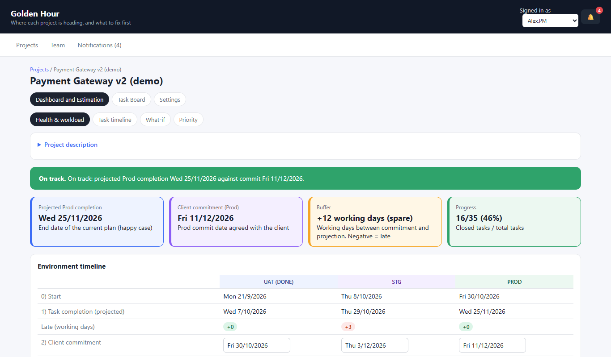
2 · DASHBOARD (CONTINUED)
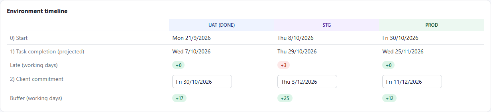
Start and completion for UAT, STG and Prod.
Late: total late working days of the open tasks in that environment.
Client commitment: change the date and it saves at once.
Buffer: green when there is time to spare, red when late.
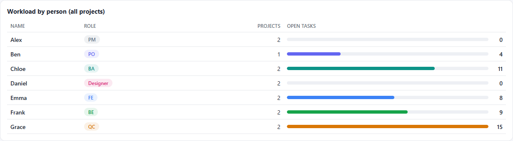
The workload table lists each person across all projects: their role, how many projects they are in, and how many tasks are still open.
3 · TASK TIMELINE (GANTT)
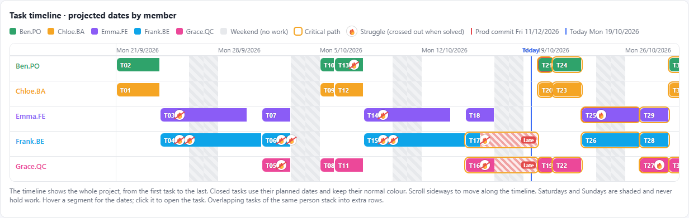
One lane per person. Red stripes mark the part of a task after its deadline. A red Late tag means overdue and already started.
Blue line is today. Dashed red line is the client commitment. Amber outline means the task is on the critical path.
🔥 marks a struggle. Click any bar to open the task.
3 · DEPENDENCY TREE
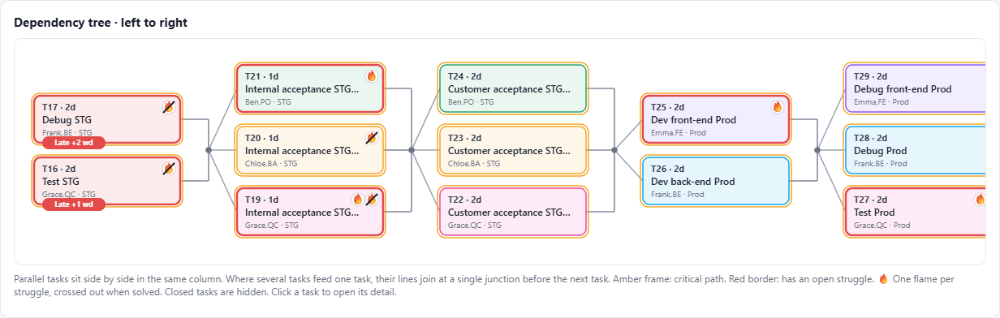
Read left to right. A task sits one column to the right of the tasks it depends on. Tasks in the same column run in parallel.
Late tasks are shaded red with a "Late +N wd" label. Blocked tasks have a red border.
🔥 is a struggle. A crossed flame is solved.
4 · WHAT-IF
Pick an open task and add 0 to 10 working days of delay.
See the new finish date, the buffer against the commitment, and the list of tasks that get pushed back.
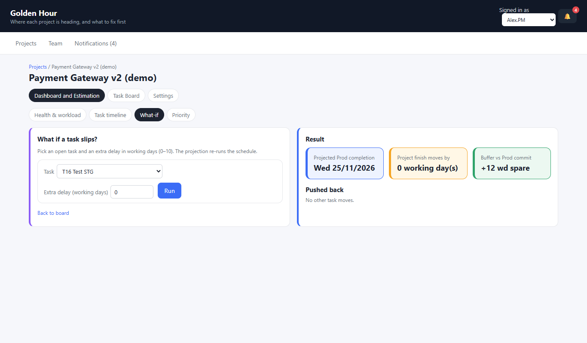
4 · PRIORITY
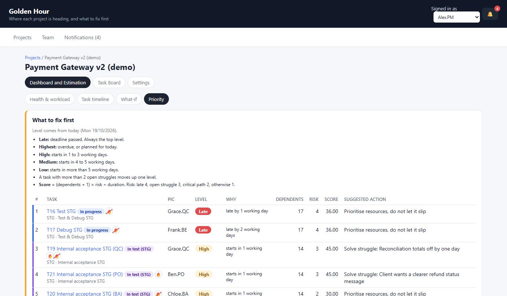
Late: deadline passed. Always the top.
Highest: overdue, or planned for today.
High: starts in 1 to 3 working days.
Medium: 4 to 5 working days. Low: more than 5.
More than 2 open struggles moves a task up one level.
5 · TASK BOARD
Six columns, from To do to Closed. Use the filters for PIC, environment and status.
Each card shows its environment, deadline, dependencies, owner and one 🔥 per struggle.
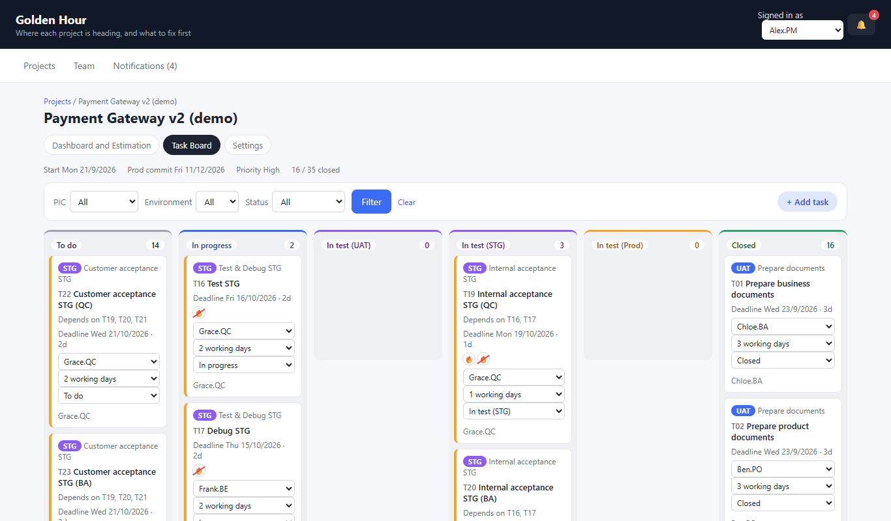
6 · TASK DETAIL
Open a task to see its owner, duration, deadline, projected dates and slack.
Add a struggle with a reason, then mark it solved. Add output links such as the PRD or test evidence.
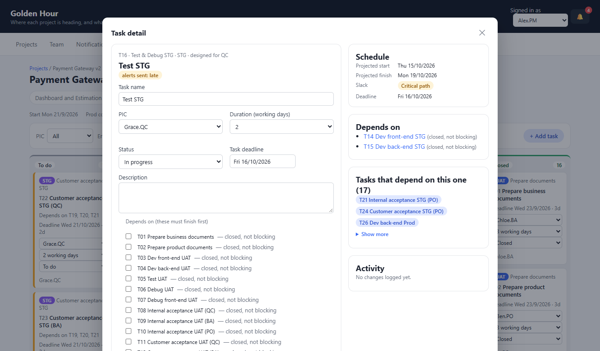
7 · SETTINGS
Change the start date, priority, commitments and project description.
PM adds or removes members, and can delete a project. A locked project shows a note instead of the delete button.
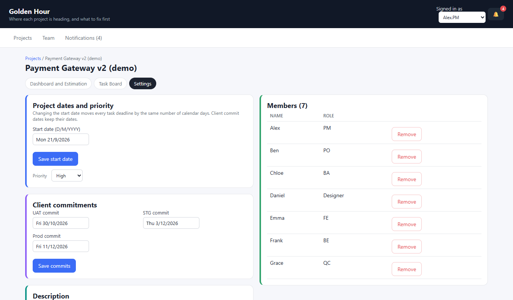
8 · TEAM AND NOTIFICATIONS
The Team page lists every member, their role, their projects and open tasks.
Changes to your projects appear in Notifications, with the bell and unread count in the header.
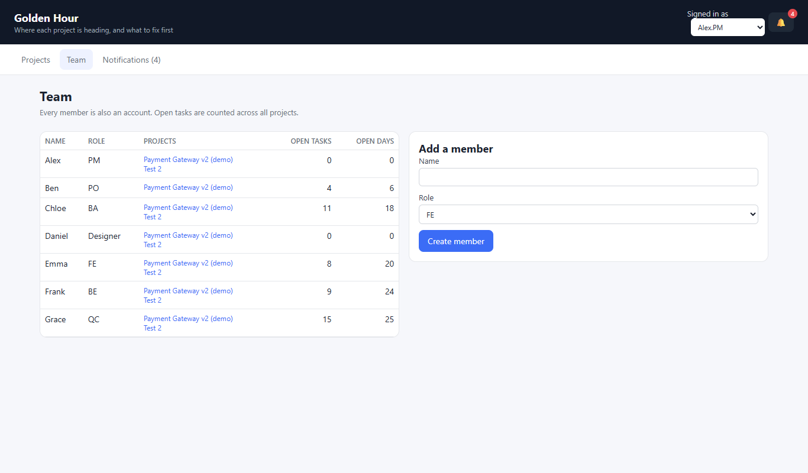
9 · CREATE A PROJECT
Enter the name, start date, Prod commitment and the team. Dates use the calendar picker or D/M/YYYY.
The default 35-task flow is created, with owners chosen by role and deadlines from the plan.
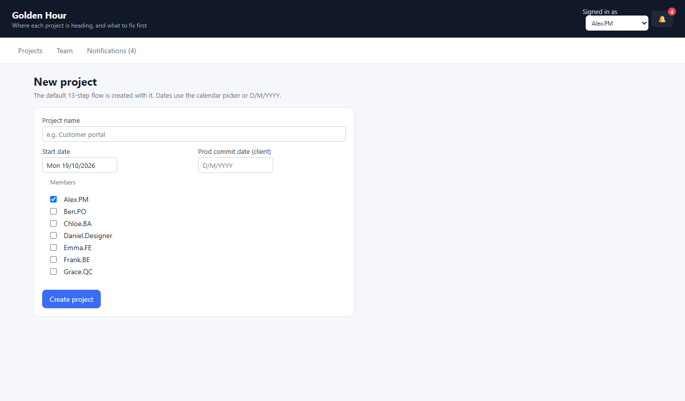
RULES AT A GLANCE
Open, started, and the deadline is before today. Working days late are counted from the deadline to today.
A task that must finish first. A task that has not started is pushed back, not marked late.
Something outside the team's control that holds a task up. Solve it and the flame is crossed out.
Working days between the client's commitment and the projected finish. Negative means late.
All dates use one format: weekday, then day/month/year, for example Tue 1/1/2027.
THANK YOU
Live app: golden-hour-pm.vercel.app
Code: github.com/Julie-hub-source/Golden_Hour_PM
No login. Use "Signed in as" to test as any team member.